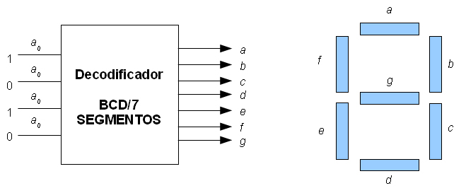
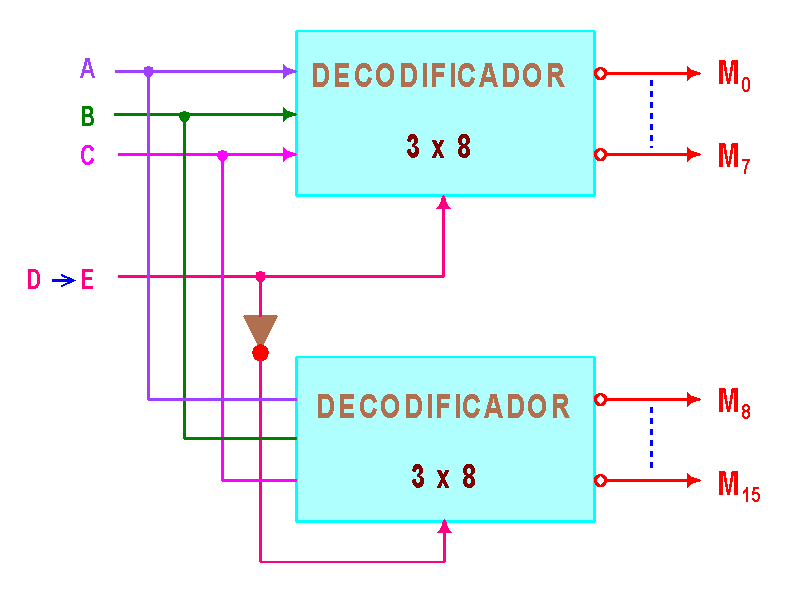
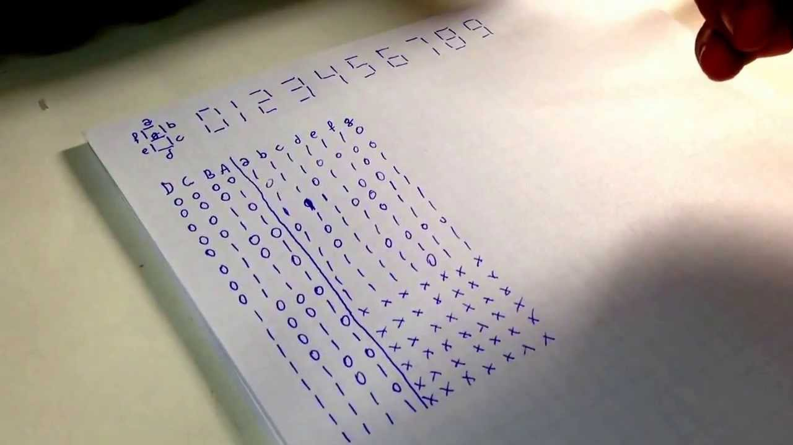

DECODIFICADORES BINARIOS BÁSICOS: Cuando se quiere determinar cuando por ejemplo aparece 1001 en las entradas de un circuito digital. Todas las entradas de la puerta AND están a nivel ALTO ya que dicha puerta
produce una salida a nivel ALTO.

Un decodificador también puede utilizarse para implementar
funciones lógicas en la forma SOP, basta colocar una compuerta OR que tome todas las salidas correspondientes
para las cuales la función tiene que valer 1. Ejemplo: F =X Y Z+ X Y Z+X Y Z+X Y Z+X Y Z.

El decodificador de 4 bits ó decodificador 1 de 16.
Se utiliza para poder decodificar todas las combinaciones de 4 bits. Para cualquier código dado en las entradas solo se activa una
de las posibles dieciséis salidas. Si requerimos una salida a nivel bajo, el decodificador de puede implementar con puertas NAND e inversores, uno por cada salida.
El decodificador BCD a decimal. Convierte cada código BCD en uno de los diez posibles dígitos decimales. El método de implementación es el mismo que para un decodificador 4 a 16,pero con la diferencia de que las salidas son solo 10. Obtendremos salidas activas a nivel ALTO y BAJO implementando las funciones con puertas AND y NAND respectivamente.